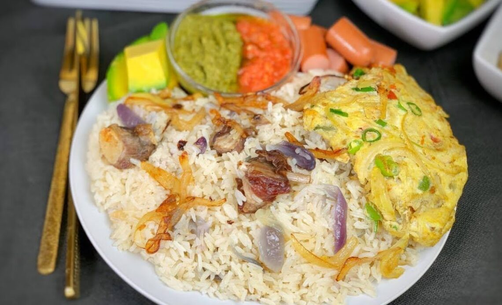

OILED RICE

In Ghana, "oiled rice" is most commonly known as Angwa Mo (or Angwamo),
a beloved comfort dish that translates literally from Twi as "oil rice".
Unlike many other rice dishes, it is prized for its simplicity and the distinct,
savory aroma that comes from frying the rice directly in flavored oil.
Unlike fried rice, where the rice is cooked before frying,
Angwa Mo is made by sautéing the raw rice in oil first.
This gives the grains a glossy sheen, a sweet flavor from the browned onions,
and a slightly oily feel when ready.
INGREDIENTS
- Rice: 2 cups (long-grain or jasmine rice)
- Oil: ¼ to ½ cup vegetable or coconut oil
- Onions: 1 large onion, thinly sliced (essential for the signature aroma)
- Protein: Salted beef (Toloo Beef) is the traditional choice.
- Water: 2 to 3 cups (adjust based on your rice type)
- Seasoning: Salt to taste
STEPS
- Prep the Beef: If using Toloo Beef, soak it in water for
about 30 minutes to remove excess salt, then cut it into small pieces.
- Fry Aromatics: Heat the oil in a pot over medium heat.
Add the sliced onions and salt beef. Fry until the onions are
deeply caramelized and brown (not burnt), which gives the rice its distinct color and flavor.
- Toast the Rice: Add the washed rice to the pot.
Stir constantly for 2–3 minutes to coat every grain in the flavored oil.
- Simmer: Pour in the water and add a pinch of salt. Bring to a boil, then reduce the heat to low.
- Steam: Cover the pot tightly (using parchment paper or foil under the lid helps trap steam)
and cook for 15–20 minutes until the water is absorbed and the rice is fluffy.
Home